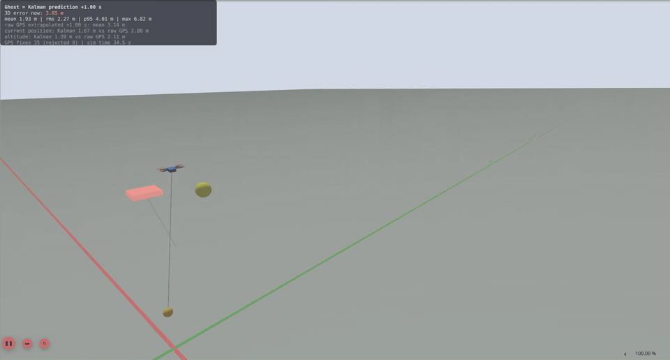

Getting started
From a fresh clone to the one-second ghost in Gazebo, then to the real sensors on a Raspberry Pi.
This guide takes you from a fresh clone to the 1-second-ahead “ghost” flying beside the drone in Gazebo, and then to the same filter running on a Raspberry Pi with a real receiver and IMU.

1. clone with the shared library
git clone --recurse-submodules <url>/gnss_imu_prediction
cd gnss_imu_predictionIf external/gnss-imu-fusion/ is empty (you cloned without --recurse-submodules):
git submodule update --init
# local sibling clones only:
git -c protocol.file.allow=always submodule update --initexternal/gnss-imu-fusion is empty, run: git submodule update --init if you forget.2. build and run the tests
- Prerequisites: CMake ≥ 3.22, a C++20 compiler and, for the device program only, Boost headers.
- Build:
cmake -S . -B build cmake --build build -jWithout Boost you get a warning and only the filter library and the tests are built.
- Test:
ctest --test-dir build --output-on-failureFive estimator cases should pass: gps only, course, imu, altitude and vertical imu.
3. run the simulation
- Get Gazebo Harmonic. On Ubuntu 24.04 install
gz-harmonicfrom packages.osrfoundation.org. On Fedora use a distrobox:distrobox create --name gazebo --image ubuntu:24.04 distrobox enter gazebo # inside: follow gazebosim.org's harmonic install for ubuntu, then sudo apt install cmake g++ libboost-dev qtbase5-dev qtdeclarative5-dev - Start it.
run.shbuilds intobuild-sim/, starts Gazebo with the shared GUI layout and the overlay plugin, then runs the bridge:distrobox enter gazebo -- sim/run.sh # with the window distrobox enter gazebo -- sim/run.sh --headless --duration 120 # terminal only - Watch it. The drone takes off and flies a figure-eight. The green box is where the filter says it will be in one second. It turns yellow, then red, as the error grows. Orange spheres show where an earlier ghost said the drone would be now, and yellow dots are the noisy GPS fixes. The terminal prints the running error once per simulated second.
- Stop with Ctrl-C to get the summary table: ghost vs. raw GPS extrapolated, the current-position estimate vs. the raw fix, and the vertical-only rows.
things to try
| command | what you learn |
|---|---|
--horizon 0.5 / --horizon 2 | how the prediction error grows with the horizon |
--gps-noise 3 --gps-drift 2 | a bad receiver: white noise plus slowly wandering multipath |
--gps-noise 0 | how much of the error comes from GPS noise rather than the IMU or the model |
--heading-error 5 | what a poorly calibrated magnetometer does to the horizontal ghost |
--accel-bias 0.2 | accelerometer bias shows up mostly in the vertical estimate |
--radius 6 --altitude-swing 5 | tighter turns and steeper climbs: harder to predict |
--manual | fly it yourself on /drone/cmd_vel (see the comment at the top of the shared sim/gui.config) |
All options: build-sim/sim/positioning_sim --help or the table in the README.
4. run it on the device
- Wire it up. MAX-M10S on uart0 (
/dev/ttyAMA0, 9600 baud) and MTi-630 on uart4 (/dev/ttyAMA4, 115200 baud). The steps for enabling the UARTs are inexternal/gnss-imu-fusion/docs/uart.sh. - Configure the IMU in MT Manager: quaternion and free acceleration at 100 Hz, magnetic declination set.
- Build on the Pi (with Boost) and run:
./build/src/main # live sensors ./build/src/main external/gnss-imu-fusion/test/python/get_data/data.txt # replay a log, no hardware - Read the output. CSV on stdout, one row per GPS fix and 10 rows a second between fixes:
source,fix_utc,age_s,lat,lon,alt,easting,northing,vel_east,vel_north,vel_up, sigma_east,sigma_north,sigma_up,gps_easting,gps_northing,gps_alt, ahead_easting,ahead_northing,ahead_alt,statusahead_*is the 1-second prediction.statussays whether the fix was accepted, rejected by the gate, or caused a reset. If the IMU port cannot be opened, the program runs on GPS alone.
./build/src/main > flight.csv # then plot it in anything that reads csvtroubleshooting
| symptom | cause |
|---|---|
| configure fails about the submodule | run git submodule update --init |
| no overlay text in Gazebo | gz-gui8 or Qt5 dev packages missing when build-sim was configured. Install them and delete build-sim/CMakeCache.txt. |
| Gazebo window does not open in the distrobox | check build-sim/gz.log. The display must be shared with the container. |
| on the device, vertical drift that grows steadily | no free acceleration output and a wrong gravity value. Enable free acceleration or set estimator_config::gravity_mps2. |
| heading looks rotated by a few degrees | magnetic declination not set on the MTi |